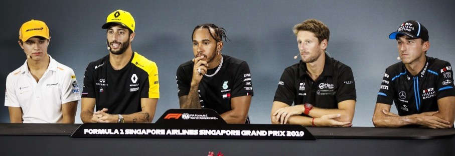
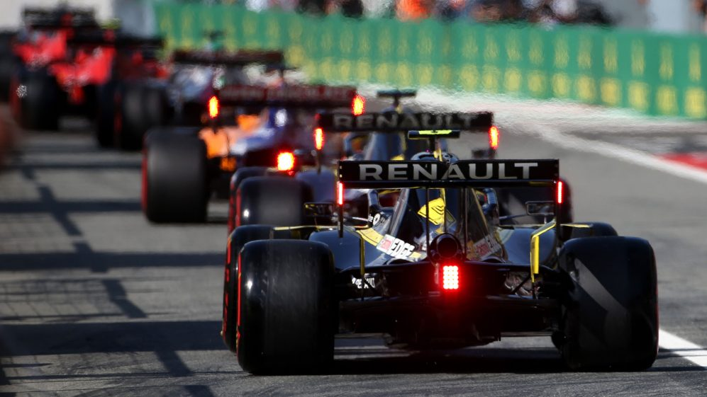

Een Formule 1 race duurt meestal 90 minuten tot twee uur. Maar de voorbereidingen voor de race beginnen veel eerder al. De week waarin er geracet wordt, wordt vaak 'race week' genoemd. Meestal zijn de coureurs al op de eerste dag van die week op de betreffende plek aanwezig. Vanaf donderdag begint het race-weekend en heeft elke dag zijn eigen functie, tot de race op zondag. Welke functies dat zijn en wat ze precies inhouden, kan je hier lezen.
Donderdag: media day
De eerste dag is het mediadag. Op deze dag worden er allerlei pre-race persconferenties en interviews gegeven door de coureurs en teamleiders. Hierin kijken ze vooruit op de race en delen ze hun verwachtingen. Ook zijn er sign-sessies waarin de coureurs hun merchandise signeren zodat het in het weekend verkocht kan worden. De donderdag is de minst belangrijke dag, omdat er nog niet geracet wordt. Er is dan ook nog geen publiek aanwezig.
Vrijdag: free practice 1 en 2
Na donderdag komt natuurlijk vrijdag. Op deze dag zijn er twee vrije trainingen van anderhalf uur, een in de ochtend en een in de middag. In deze trainingen kijken de teams hoe hun auto rijdt en wat er eventueel nog aangepast of verbeterd kan worden. Ook is dit de gelegenheid voor de coureurs om de baan te testen en er bekend mee te worden. Op basis van deze vrije trainingen kunnen de eerste analyses en voorspellingen voor de race en kwalificatie worden gemaakt. Er wordt bij de trainingen een ranking gemaakt op basis van de snelheid van elke coureur. De snelste tijd komt bovenaan. Er valt hier echter nog niks mee te winnen; het is puur voor het verzamelen van gegevens.
Zaterdag: qualifying
Zaterdag is de eerste echt belangrijke dag. Eerst is in de ochtend fp3, de laatste vrije training. Die duurt een uur. Daarna de kwalificatie plaats. De kwalificatie bepaalt in welke volgorde de coureurs op de grid staan voor de start van de race op zondag. Het is op basis van snelheid; als je de snelste tijd neerzet in één rondje, kom je vooraan te staan. Er zijn drie sessies waarin bepaald wordt wie er op pole position start op zondag en wie achteraan. De coureurs kunnen zoveel mogelijk ronden rijden als ze willen, maar meestal gaan de betere teams pas wat later de pits uit. De teams die minder goed zijn, gaan meestal al vanaf het begin rijden, zodat zij alle tijd hebben om hun snelste ronde neer te zetten. Als de geblokte vlag naar beneden gaat, wat betekent dat de sessie of race afgelopen is, mogen de coureurs wel hun rondje afmaken, maar geen nieuw rondje beginnen. Na elke sessie worden de tijden die gereden zijn geschrapt en begint iedereen weer op nul.
Q1 is de eerste ronde. Hij duurt 18 minuten en heeft een knock-out. Na de 18 minuten worden de 5 langzaamste coureurs geëlimineerd en zij mogen niet meedoen in Q2. De plek waar zij op eindigen, is hun startplek bij de race.
De 15 coureurs die er nog in zitten, gaan in Q2 weer hetzelfde doen als in Q1. Ze moeten weer de snelste tijd neerzetten zodat ze niet geëlimineerd worden en zondag vanaf een goede plek kunnen starten. Q2 duurt 15 minuten als deze tijd voorbij is, vallen de vijf nieuwe langzaamste coureurs uit. Zij starten dan zondag op de plek waar zij zijn geëindigd.
Na een korte pauze begint de laatste sessie, Q3 van 12 minuten. Dit wordt ook wel de 'top 10 qualifying' genoemd, aangezien hier de 10 snelste coureurs strijden om de beste grid-positie. In deze ronde vallen er geen mensen uit. Na de twaalf minuten krijgt coureur met de snelste lap time de eerste plek. Hij start dus vanaf nummer een op zondag.
Zondag: de Grand Prix
En dan is het op zondag zover. De race. De race begint meestal rond twee of drie uur 's middags. Soms zijn er afwijkingen, omdat er in Singapore bijvoorbeeld in de nacht gereden wordt, dus dan is de race een andere tijd. Bij de race draait het niet om de snelste tijden. Hier gaat het erom dat je zoveel mogelijk andere racers inhaalt zodat je zo ver mogelijk bovenaan eindigt. De top drie coureurs komt op het podium en krijgt een beker en de meeste punten. De punten gaan als volgt: 25 voor eerste, 18 voor tweede, 15 voor derde, en dan achtereenvolgens 12, 10, 8, 6, 4, 2, 1.
Ook is er nog een extra punt te behalen als je de snelste raceronde rijdt van de hele race. Er zijn ook penalty's die je kan krijgen als je iets fout doet, bjivoorbeeld als je tijdens de race over de kerb (rood-wit geblokte rand) gaat in een bocht waar track limits op zitten. Dan worden er bijvoorbeeld 5 seconden van je tijd afgetrokken, waardoor je een paar plekken omlaag gaat. Als je bijvoorbeeld een crash veroorzaakt, kan je ook een stop-go pitstop krijgen. Dan moet je een paar seconden blijven staan in de pits voordat je de pitstop mag hervatten.
Tijdens de race is strategie enorm van belang. Er moet namelijk beslist worden wanneer de pitstops gemaakt worden om de banden te verwisselen, want die gaan snel kapot als de auto 300 km/uur rijdt. Er zijn tijdens de race drie soorten banden beschikbaar als het niet regent: soft (rood), medium (geel) en hard (wit). De banden moeten goed gekozen worden, want er is maar een beperkt aantal sets van iedere compound beschikbaar en bij elk circuit past weer een andere band. Daarom worden er allemaal strategieën bedacht. Een race kan een een-stopper zijn of bijvoorbeeld en driestopper. Dat is het aantal keren dat er een pitstop wordt gemaakt en de banden worden verwisseld.